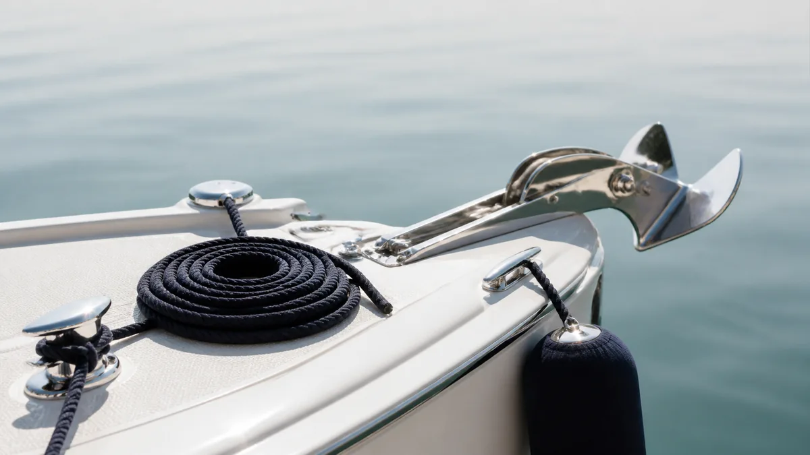

ЛОДКИ · 06
Якорное и швартовное оснащение
Надёжная стоянка начинается не с якоря «на всякий случай», а с подходящего комплекта и аккуратной проверки.

Якорь и трос
- Подберите массу якоря и длину троса под лодку, грунт и условия акватории.
- Осмотрите карабины, коуши и верёвку на перетирание.
- Укладывайте трос без узлов: он должен свободно отдаваться.
Швартовы и кранцы
Проверьте утки, рымы и крепления. Держите кранцы и швартовы доступными до манёвра, а не после него.
Подготовка к манёвру
Кранцы и швартовы нужно подготовить до подхода к берегу. Ходовой конец якорного троса закрепляют надёжно, но так, чтобы в нештатной ситуации его можно было быстро освободить.
Частые ошибки
- Повреждённая верёвка «ещё на один сезон».
- Трос с узлами и перекрутами.
- Швартовка за случайные элементы оснащения.
Полезно после проверки
Полезно потренировать постановку на якорь и швартовку в спокойной акватории. Когда действия понятны всем на борту, манёвр проходит спокойнее и без рывков за снасти.